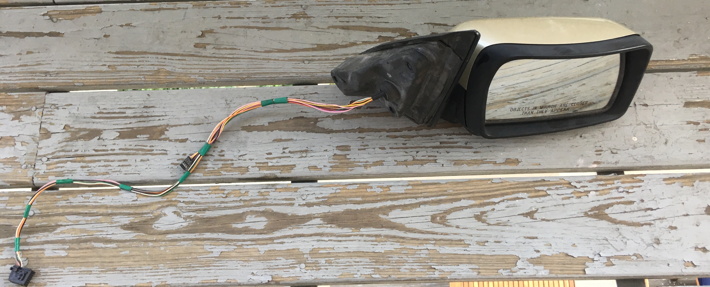
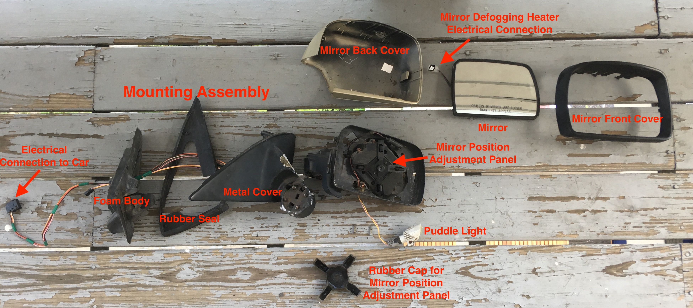
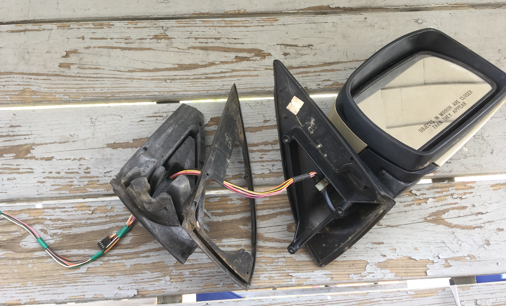
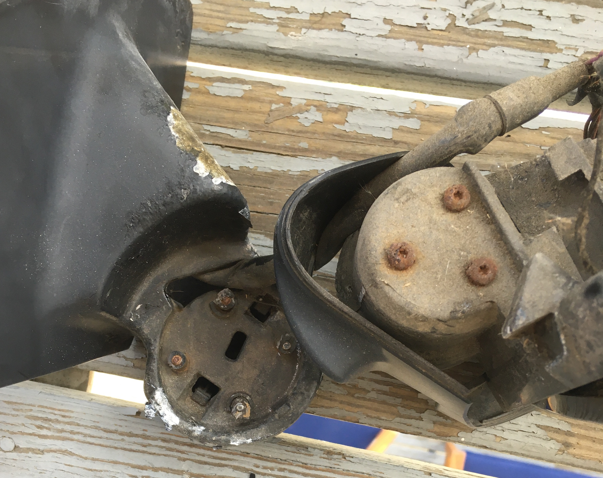
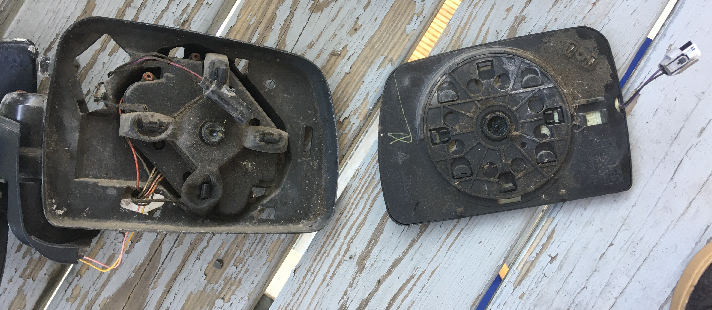
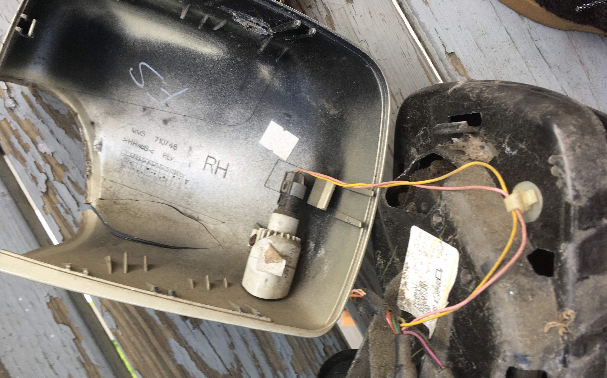

Introduction
During all seasons except the winter, I like to go running in the park near my apartment. To me, some fresh air and nature is a great way to start the day. As I explored the park on these runs, I noticed that the vegetation seemed to be competing with a growing amount of trash. With the help of my brother, I tried to bag up and remove some of this trash so others could enjoy the natural beauty of the park as I had. We were mostly just collecting cigarrete packets, plastics, and broken glass, but I also found a side view mirror from a car! And so another teardown began. This one took place outside on my porch though as the side view mirror seemed to have accumulated quite a bit of grime sitting in the park.
Original Car Side View Mirror
Labelled Exploded View of Car Side View Mirror
When the text on the mirror is oriented such that it is readable, the mirror is right of the mounting assembly. Therefore, this side view mirror is for the right side of the car. Additionally, given the relatively short arm length between the mount and mirror, this side view mirror was likely used for a midsize car. Looking at passenger side mirrors that are heated, don't have signal lights, fold manually, have puddle lights, and don't have blind spot detection, the manufacturing number (from Kool Vue) for the closest resembling mirror was BM52ER. Mirrors with this manufacturing number were used for the 2000-2002 BMW X5 according to a sale of the mirror on Amazon. This conclusion seems reasonable given that a sticker located internally on the mirror (pictured below) was dated April 9th, 2001. Several of the plastic pieces were molded with the text "Lakeland" and an adjacent icon I couldn't identify. I'm unsure what to make of this information. Given that it was found on two different components in the side view mirror, it seems likely it might be the name of the mirror manufacturer but a quick search on Google didn't yield anything.
Mysterious Label
Dated Sticker
Mounting Assembly
The mounting assembly used to mount the side view mirror to the car contained 3 components: a sturdy foam body, a flexible rubber seal, and a rigid metal exterior. The mounting assembly is connected to the mirror assembly with a series of screws adjacent to the folding pivot of the mirror.
Mounting Assembly Components
The screws holding the mounting and mirror assemblies together had become quite rusty over time and the screwheads fell apart when I tried to unscrew them. As a result, this teardown took a destructive turn. To separate the mounting and mirror assemblies, I yanked the mounting and mirror assemblies apart, shearing the screws in the process.
Bolted Connection Sheared Apart
Mirror Assembly
In addition to the mirror itself, the mirror assembly includes components to adjust the position of the mirror and heat it as well as a small puddle light.
Mirror Assembly Components
Mirror with Heating Element
Like the other pieces of the side view mirror, the mirror piece had a thick coating of dust and grime. To get a better look at the text etched on the back of the mirror piece and also so that I could later use the mirror as a decoration for my room, I cleaned the mirror. The mirror piece before and after cleaning is pictured below. The mysterious "Lakeland" label can be seen in the bottom right corner.
Underneath the black plastic mirror backing is a sheet containing a wire that loops back and forth underneath the surface of the mirror. As current passes through the wire, power is dissipated from the wire to heat the mirror. As the mirror heats, water evaporates from the mirror surface, allowing the driver to have a clearer view of the reflection provided by the mirror.
Mirror
Cleaned Mirror
Mirror Position Adjustment Panel
Using the mirror position adjustment panel, the mirror can be tilted left, right, up, and down. To achieve movement in these four different directions, the adjustment mechanism contains two crescent shaped pieces with only the ends of the crescents protruding from the mechanism. One of these crescent shaped pieces controls the up-down motion of the mirror and another controls the left-right motion of the mirror. Therefore, the position adjustment mechanism can be said to have two degrees of freedom (DOFs). The mirror adjustment panel is pictured below with and without the rubber cap removed. The rubber cap over the adjustment mechanism likely serves to protect the mechanism as well as the motors powering it from water and soil damage. Although I wasn't able to remove the mirror adjustment mechanism to see the motors, evidence of the motors is shown through the wiring entering beneath the position adjustment mechanism.
Mirror Position Adjustment Panel
Mirror Position Adjustment Panel (Rubber Cap Removed)
Puddle Light
Mounted on the back cover of the side view mirror was a small light. Initially I was thinking the light might have been used as a turning signal, but this didn't totally make sense given how small the light was and the fact that it was directed straight down. What is more likely is that the light was used as a puddle light, illuminating the area in front of the car doorway (where there might be a puddle).
Puddle Light Mounted on Back Cover